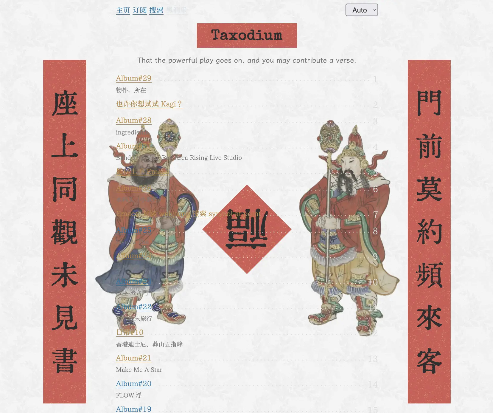

博客春节彩蛋：贴春联
快到春节了，想着给博客添加一点节日气息，做点什么好呢？想到春节一定会做的一件事就是贴春联，那不如就给博客贴上一对春联吧！
效果请看下图（ @media screen and (width >= 1440px) ）：
{kind=link}

这个样式会持续到春节假期结束，如果你觉得它太花里胡哨、影响阅读，还请多包容啦。
(´｡• ᵕ •｡`)
如果你对实现感兴趣，那下面的内容就是为你准备的：
春联我用的是 楼钥 曾经的春联：「门前莫约频来客，坐上同观未见书」，我还蛮喜欢这句话的。
春联一般都是竖着的，可以用 writing-mode 控制文字方向，然后还要设置 letter-spacing 增加字与字之间的间距；字体我用的是 汇文明朝体，看起来会有一点点书法的感觉（如果你有更好的字体请推荐给我！）；春联的颜色我是从网上找了一些春联的图片，提取了一个红色，基于这个红色，用 relative colors 调整了亮度、饱和度，让它看起来没那么刺眼；如果你留意的话，会发现春联上还有一些黄色的斑点，我是想模拟春联上那些金箔，使得更有春联纸的质感（感谢女朋友给我的建议(´｡• ᵕ •｡`) ♡），幸运的是，我以前存的博客背景图里正好有一张满足需要，我觉得效果还不错！
这对春联是没有横幅的，我也想不到更好的横幅，干脆就把博客标题作为横幅了。
福字是用 rotate 倒转过来，用 clip-path 将背景裁剪成菱形。
门神是从网上找了些图片，用 MacOS 自带的 preview 可以移除背景，只保留人物； 目前这两个门神形象我还蛮喜欢的，问了 Kagi，据说是 尉迟敬德（左）和 秦琼（右）。
关于两位门神
小说《西游记》里记载了秦琼变成门神的故事：唐太宗因无心之过，害死了泾河龙王，龙王阴魂不散，闹得太宗六神无主。魏徵建议派秦琼、尉迟恭守住前后宫门保驾，果然奏效，皇帝由于两人太过疲惫，命画家吴道子画了两人之像，贴在宫门口，照样管用。后来此举在民间流传开来，秦琼与尉迟恭成了最常见的门神。
剩下的还要做一些小优化：
- 适配 dark-mode
- 使用媒体查询，只在屏幕足够大的时候才展示，在手机上只会展示一个「福」字
- 因为门神会使得文字看不清，当鼠标悬浮在目录上时，我会添加一个背景，使得目录能看清。我也尝试过降低门神的透明度，避免影响文字，但透明度太低，门神就没那么好看了。目前这样算是一个相对折中的做法。
具体的样式可以见：sitemap.css，或者用开发者工具来了解。